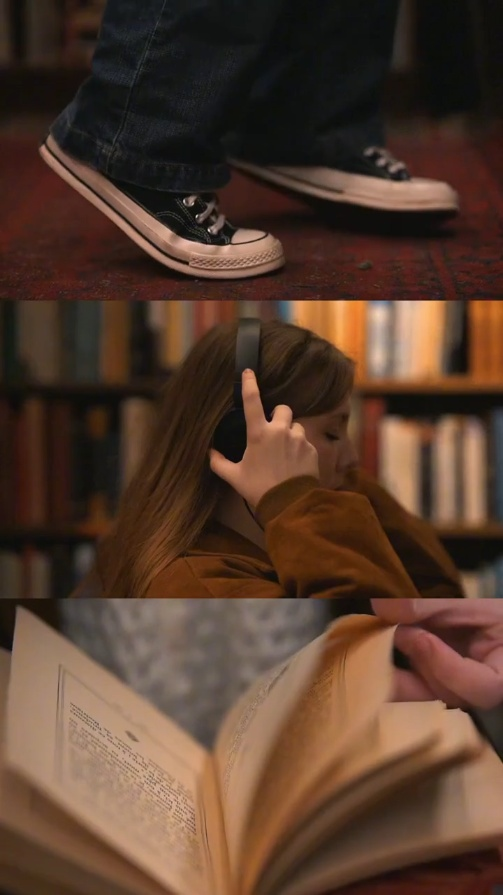
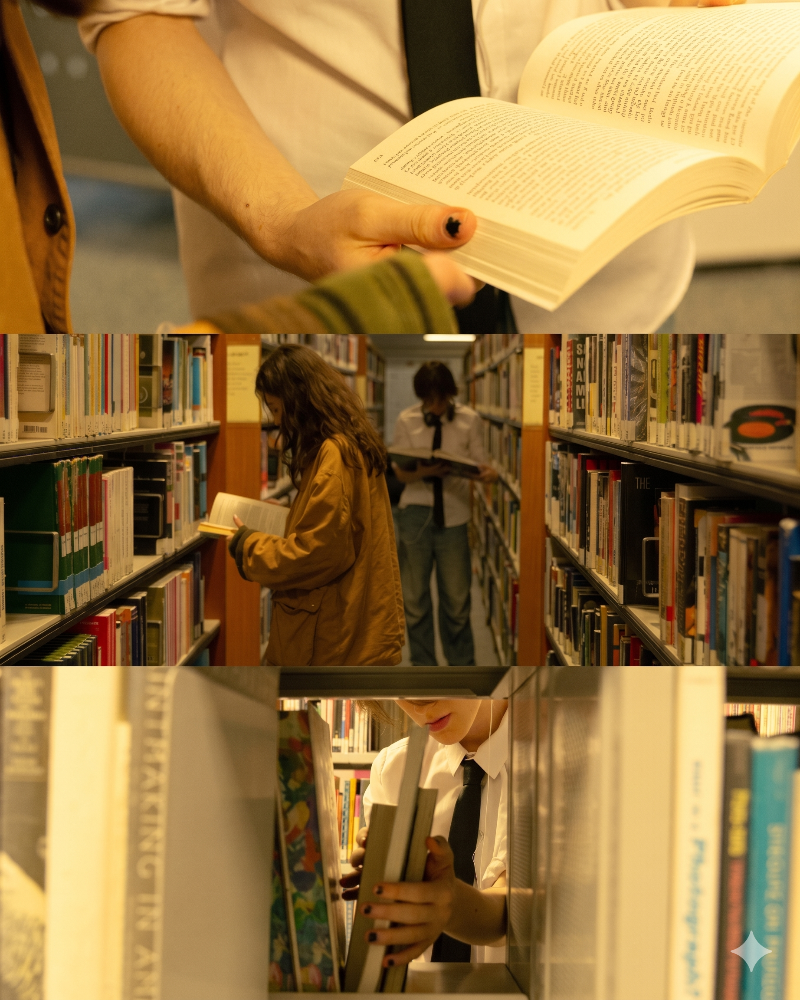
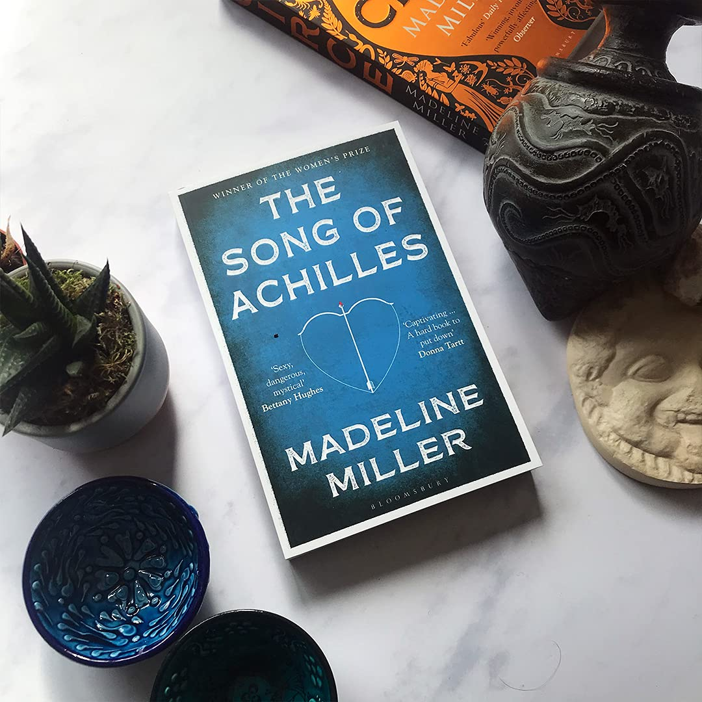
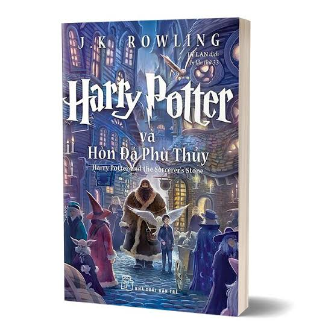
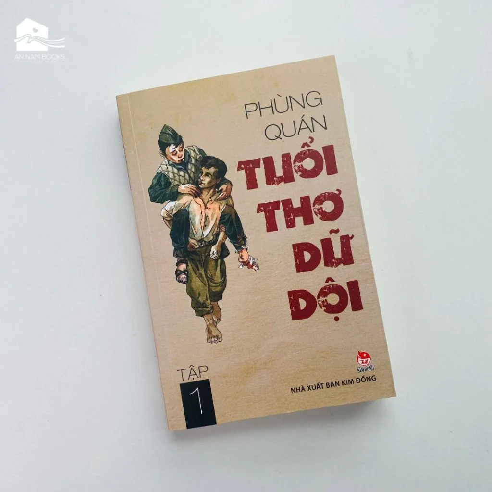
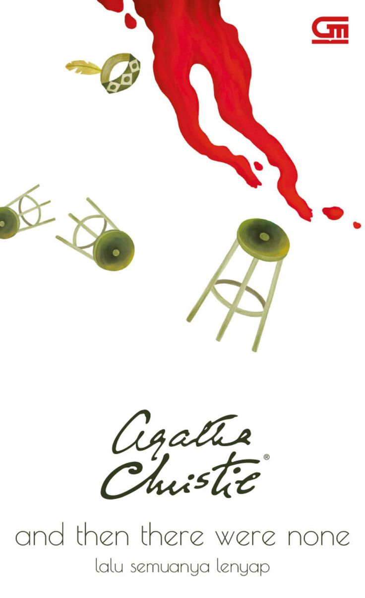

Hồi hộp
Những triết lý về nhân sinh
Đọc sách không phải để tích lũy thật nhiều kiến thức, mà là để tìm thấy sự đồng điệu giữa hàng ngàn dòng chữ. Dành ra vài phút mỗi ngày để chậm lại và cảm nhận.


Nơi đây không có giỏ hàng, không có bảng xếp hạng, và không có áp lực số trang phải hoàn thành. Chúng tôi xây dựng không gian này để giúp bạn gạt bỏ những định kiến khô khan về việc đọc. Hãy cứ bước vào, chọn một tâm trạng, và để một phần văn học của lịch sử loài người tìm đến bạn.
Những triết lý về nhân sinh
Tình yêu và những rạn vỡ
Phá vỡ những quy chuẩn
Những góc tối tĩnh lặng
Tìm lại điểm cân bằng
"Đoạn văn bản tóm tắt ngắn gọn hoặc trích dẫn sâu sắc của cuốn sách nằm ở đây..."
"Một khúc bi ca thanh xuân đượm buồn về tình yêu, nỗi mất mát và hành trình tìm kiếm bản ngã giữa Tokyo thập niên 60 đầy biến động. Chết không phải là đối nghịch của sống, mà là một phần của sự sống."
"Câu chuyện truyền cảm hứng lay động về nghị lực phi thường của mười đứa trẻ nghèo đảo Belitong vượt qua nghịch cảnh để chạm tới ước mơ tri thức. Hãy tiếp tục mơ ước, bởi ước mơ chính là sợi chỉ dẫn đường kỳ diệu nhất."
"Kiệt tác hiện thực huyền ảo đồ sộ phác họa sự hưng thịnh và suy tàn của bảy thế hệ gia tộc Buendía cùng ngôi làng huyền thoại Macondo. Cái chết không đến với tuổi già, mà đến cùng sự lãng quên."
"Thiên truyện triết lý bất hủ về chuyến phiêu lưu giữa các vì sao, nhắc nhở con người về những giá trị nguyên sơ và thuần khiết nhất của trái tim. Người ta chỉ thấy rõ bằng trái tim, những gì cốt lõi đều vô hình trong mắt trần."

Tác phẩm đầu tay của Madeline Miller đã xuất sắc vượt qua nhiều tên tuổi lớn để đoạt giải Orange Prize for Fiction năm 2012, tái hiện thiên tình sử bi tráng và huyền thoại thành Troy dưới góc nhìn nhân văn sâu sắc.

Cuốn sách mở màn cho kỷ nguyên huyền thoại đã chiến thắng giải vàng Nestlé Smarties Book Prize danh giá và trở thành hiện tượng văn hóa toàn cầu được dịch sang hơn 80 ngôn ngữ.

Thiên tiểu thuyết sử thi hào hùng của nhà văn Phùng Quán về những chiến sĩ liên lạc nhỏ tuổi tại chiến khu Bình Trị Thiên, đoạt giải thưởng Hội Nhà văn Việt Nam và trở thành bản hùng ca bất tử của tuổi trẻ yêu nước.

Kiệt tác đỉnh cao của Nữ hoàng trinh thám Agatha Christie với hơn 100 triệu bản được bán ra, giữ kỷ lục cuốn tiểu thuyết trinh thám - ly kỳ ăn khách nhất trong lịch sử văn học nhân loại.